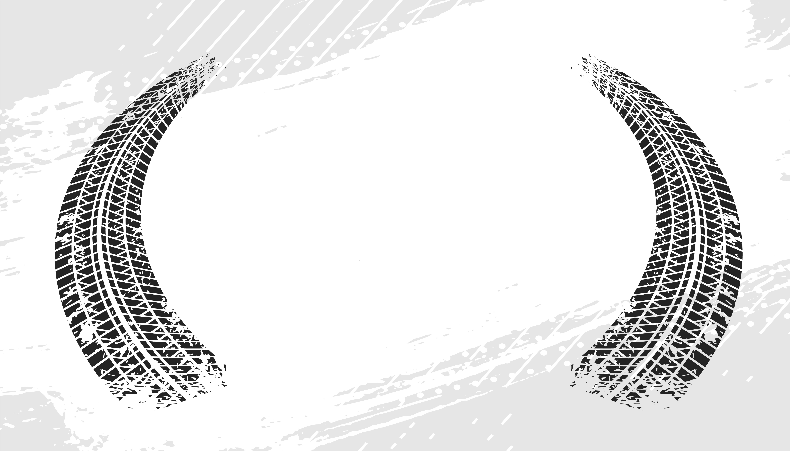

To become the leading one-stop workshop for all vehicle owners, offering a comprehensive range of maintenance services. We aim to be recognised for reliability, efficiency, and customer satisfaction — expanding our footprint across the Northern Cape, and in time, into other provinces across South Africa.
We prioritise our customers by delivering exceptional service that enhances the safety and performance of their vehicles. We're equally committed to addressing youth unemployment — providing training and employment opportunities that help young people build skills for lasting careers.
Build a reputation for reliability and efficient service across our core service lines.
Deepen relationships with mining, logistics, and transport operators running heavy-duty fleets.
Expand training and employment programmes that equip young people with real workshop skills.
Extend our footprint beyond the Northern Cape into other South African provinces.
Tshidiso Wheel and Tyre — Auto and Truck Tyres. A registered tyre and wheel workshop serving the Northern Cape, founded by Tshidiso Kgoa.